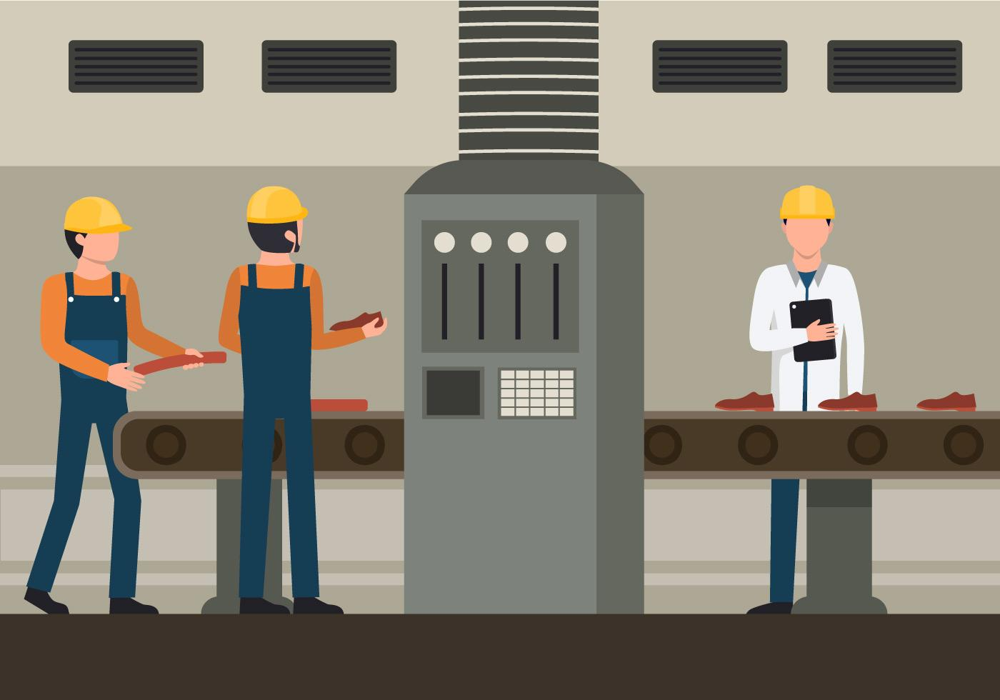

Technology has transformed our planet and our everyday lives throughout the years. Technology has developed incredible tools and resources, allowing us to access essential information at the click of a finger. Multi-functional devices such as
the wristwatch and smartphone have been made possible by modern technology. Computers are becoming quicker, more portable, and more powerful than ever. Technology has made our life easier, faster, better, and more enjoyable as a result of
all of these changes.
Communication

Communication is one of the areas where technology has had the greatest influence. Conversing with individuals outside of your immediate region used to be a difficult procedure that needed the use of actual letters and a great deal of time. For the most of the twentieth century, professional communication consisted of letter writing, faxing, or spending hours on the phone. That is no longer the case. In today's workplace, email is the key form of corporate communication.Text messaging, email, and social networking websites have made it possible for society to become more linked.
Education

Computers and the Internet have changed the face of education. Computers can store massive quantities of data in a very tiny amount of space, reducing bookshelves of reference books to a single drive. They allow for improved knowledge presentation, making the teaching process easier and more successful. People all around the globe now have access to new learning possibilities because to online schooling. Lessons and lectures in text or video form can be published to websites, making knowledge more accessible. The World Wide Web makes all of the information you need available and accessible 24 hours a day, seven days a week.
Health
The healthcare business has been greatly influenced by technological advancements. Diagnostic tool advancements enable doctors to detect health problems earlier, increasing the likelihood of effective life-saving therapies. Vaccines have proven extraordinarily efficient in almost eliminating illnesses such as measles, diphtheria, and smallpox, which were formerly responsible for major outbreaks. Patients can now manage chronic disorders that were formerly painful and life-threatening, such as diabetes and hypertension, thanks to advances in medical technology. Medical technological advancements have extended people's lives and enhanced their quality of life all across the world.
Productivity
Since computers' capacity to solve complicated mathematical problems has allowed them to speed up virtually any operation, technology has dramatically enhanced productivity. Engineers can use computer modeling to simulate structures, vehicles, and materials in order to offer performance details related to manufacturing. The capacity of networked computers to exchange and manipulate data in the office may speed up a range of processes, allowing people to work more effectively and productively. Agriculture technology developments have enhanced food production.Critical time-consuming tasks in so many areas of our life may now be completed with simplicity and in a shorter time they formerly needed.